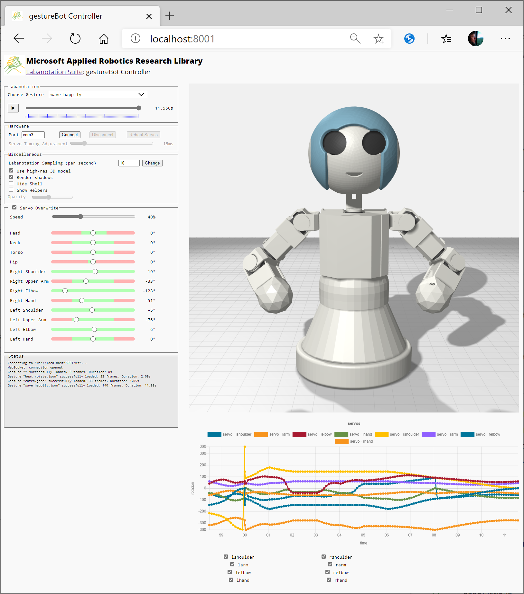

Microsoft Applied Robotics Research Library
Microsoft Applied Robotics Research Library
Open Source Samples for Service Robotics

gestureBot Construction Guide
Session 10: Run the Labanotation Gesture Applications
At this point the gestureBot hardware is complete and ready to run the Labanotation Suite software applications.
Parts:
- Completed gestureBot
- Windows 10 PC with USB3 port

Procedure:
First, prep the PC to run applications with Python3.7:
- Follow the software installation instructions for either the Gesture Service or (if you are in a hurry) gestureBot sample projects included in this repository and verify that the browser-based user-interface (UI) services run successfully on the Windows 10 PC.
- Plug in the gestureBot's USB3 hub's power supply.
- Connect the gestureBot's USB cable to the PC.
Second, run a script to set servo rotation limits:
- To protect the gestureBot from being damaged with movement commands that cause collisions or pull cables, we will run the Python code in the sample folder:
\gestureBotDesignKit\src\Samples\gestureBotSetLimits\
-
Using Microsoft Visual Code or any text editor, open the file in the repository folder: \gestureBotDesignKit\src\Samples\gestureBotSetLimits\main.py
-
In line 50, change the value to match the serial port noted earlier for your gestureBot. For example:
self.comPort = "com4"
Tip: If needed, the serial port can be looked up in Windows Device Manager as shown at the end of Session 1.
Following is an example run session:
C:\Users\robotics\github_repos\gestureBotDesignKit\src\Samples\gestureBotSetLimits>python main.py
gestureBot: connecting to port 'com4'...
ID: 1: setting CW angle limit to -70 (272)
ID: 1: setting CCW angle limit to 50 (682)
ID: 2: setting CW angle limit to -91 (201)
ID: 2: setting CCW angle limit to 91 (821)
gestureBot: disconnecting from port 'com4'...
Tip: In the future, if you modify your gestureBot and want to set different safety limits, this code provides an example in the run() function starting at line 270.
Third, run the Gesture Service sample application and connect it to the gestureBot:
- Open the URL http://localhost:8001 in the browser.

-
In the Hardware section of the UI, enter the Port value for your gestureBot and select the Connect button.
-
After connecting, the physical gestureBot will move to the current pose and thereafter track the on-screen virtual gestureBot movements until it is disconnected.